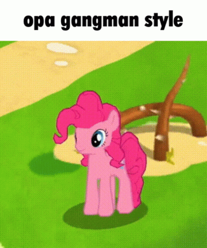
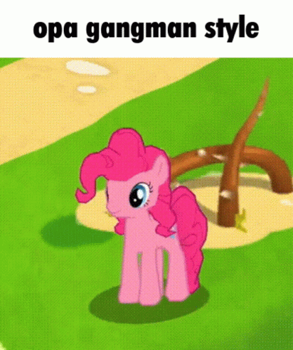

GIFS ESTÚPIDOS
Eu tenho certeza que você clicou nisso ocm curiosidade e não para obter gifs estúpidos...
Sabe aquele tédio tão grande que todos nós sentimos? Eu fiquei com tédio na escola e do nada pensei: por que não criar um site sobre gifs totalmente estúpidos? Eu vou tentar colocar novos gifs todas as quintas, que é um dos dias que eu e minha turma sempre vamos em laboratórios de informática!
Bom, aproveite! Você pode clicar neles e salvar!


 
